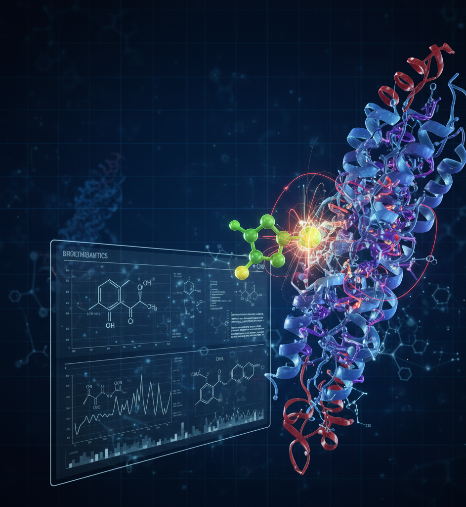
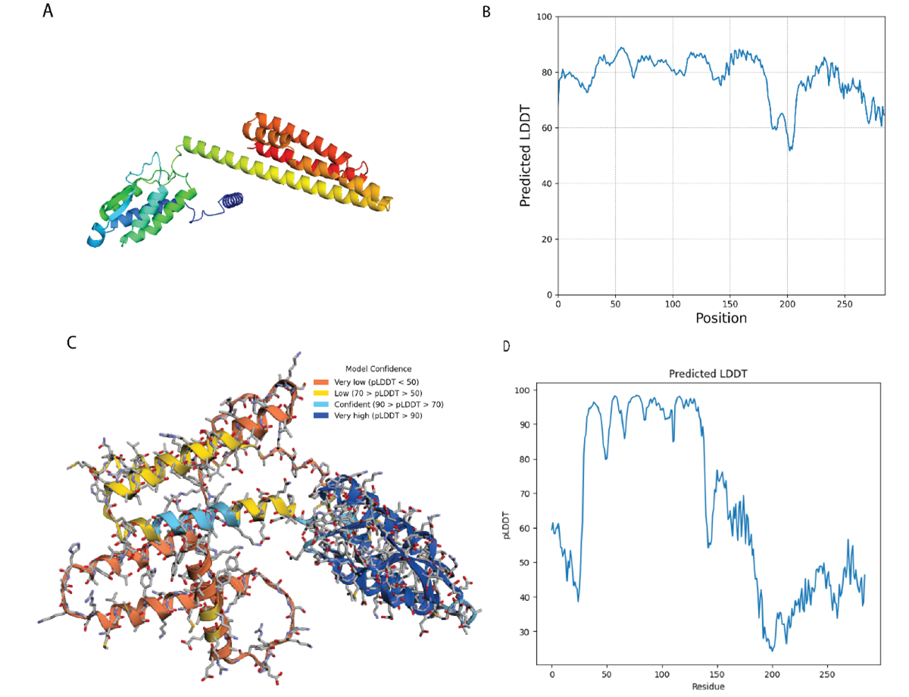
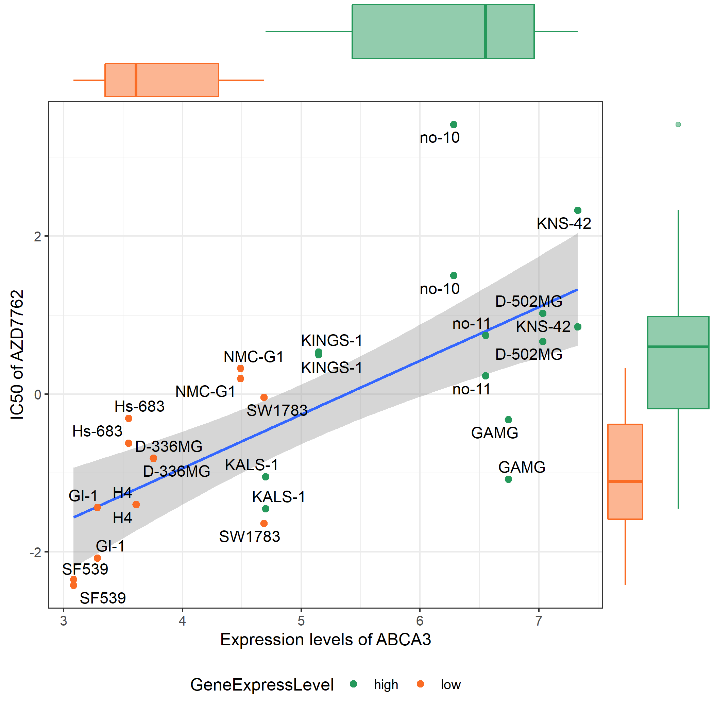
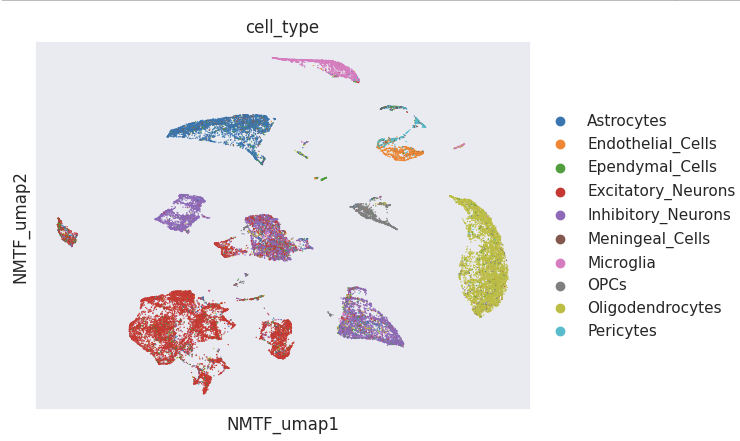

Cancer Genomics
Using NGS data to characterize tumor genomic landscapes and surface novel biomarkers.
Kayode Raheem, MS
Bioinformatics · Computational Oncology
I build AI-driven, reproducible pipelines that turn multi-omics and spatial data into translational insights for cancer research — with a focus on how the spatial organization of tumors drives treatment resistance.
I work across bioinformatics, AI/ML, and translational medicine, integrating genomics and spatial/single-cell omics with digital pathology and clinical informatics to model tumor evolution, forecast therapy response, and discover biomarkers. Methodologically, I build graph neural networks and transformer models with causal and temporal analytics, delivered as reproducible pipelines (Nextflow/nf-core, containers, HPC/cloud).
I am especially interested in how the spatial architecture of the tumor microenvironment — cellular neighborhoods, niches, and tissue context — shapes therapy resistance, and in computational method development for spatial omics (Visium, Xenium, MERFISH, CODEX), including graph- and transformer-based models for cell-type deconvolution, niche detection, and spatially aware survival modeling. I also collaborate on computational drug discovery and pursue health equity through generalizable, fair evaluation.
Awarded a highly competitive UNMC Graduate Fellowship — This is a highly competitive process and only those who rank in the top 25% percentile will be awarded fellowships
Competitively selected for the Deep Learning for Science School (DL4Sci) Hosted by Computing Sciences at Berkeley Lab, the 2026 Deep Learning for Science (DL4SCI) Summer School is a five-day intensive program bringing together researchers and engineers to explore the latest advances in deep learning and generative AI (GenAI), with a special emphasis this year on foundation models, reasoning, and agentic AI for scientific discovery.
Competitively selected for the MONET Workshop — the NIH-funded Multi-Omics Network Analysis Workshop at the University of Colorado Anschutz Medical Campus.
New paper out in In Silico Pharmacology: Personalized mRNA vaccine for breast cancer: in silico neoantigen discovery and immunogenic validation in a Pakistani patient cohort.
Our paper, Kaempferols from Echinacea purpurea Demonstrate Anti-Cancer Potential by Targeting Anexelekto in Breast Cancer Therapy Using a Chemoinformatics Approach, was accepted to Discover Oncology.
Joined the University of Nebraska Medical Center as a PhD student in Bioinformatics and Systems Biology.
Presented work on the therapeutic capability of medicinal-plant bioactive constituents against the mutant ovarian TP53 gene at the 30th Conference on Intelligent Systems for Molecular Biology (ISMB), ISCB.
Using NGS data to characterize tumor genomic landscapes and surface novel biomarkers.

Structural bioinformatics for protein–ligand interaction studies and therapeutic design.
Applying deep learning to complex biological data for robust, interpretable prediction.
Nagarajan, N., Shakyawar, S.K., Raheem, K., et al. (2026). Journal of Translational Medicine. doi.org/10.1186/s12967-026-08463-w
Raheem, K., et al. (2026). In Silico Pharmacology. doi:10.1007/s40203-026-00631-6
Raheem, K., et al. (2024). Cancer Epidemiology, Biomarkers & Prevention.
Raheem, K., et al. (2023). arXiv preprint.
Raheem, K., et al. (2023). Advances in Biomarker Sciences and Technology.
A complete list is available on Google Scholar.

Designing mRNA vaccines from NGS data.

Interactive cancer drug-sensitivity analysis.

Identifying biomarkers and drug targets.
2024 – Present
University of Nebraska Medical Center, Omaha, NE, United States
2022 – 2024
COMSATS University Islamabad, Pakistan
2012 – 2017
Adekunle Ajasin University, Akungba-Akoko, Nigeria
2026 – Present
African Student Association, University of Nebraska Medical Center, Omaha, NE
Lead mentorship programming, professional-development initiatives, and career-advancement activities for graduate students.
2025 – Present
Nebraska Science Olympiad, Omaha, NE
Collaborate with state directors, coaches, and fellow supervisors to organize and oversee STEM competitions for middle- and high-school students; contribute to planning, judging, and event coordination in support of inquiry-based science education.
2025 – Present
American Cancer Society on Campus, Omaha, NE
Coordinate campus-based cancer-research awareness initiatives; organize educational seminars and fundraising events; promote scientific literacy and research engagement among undergraduates.
Open to discussing research, collaborations, or new opportunities in computational oncology, multi-omics, and AI for biomedicine.
kayoderaheem.y@gmail.comAdd your presentation files to assets/presentations/ and update links below.
Oral presentation (PDF) Poster (PDF) Interactive slides